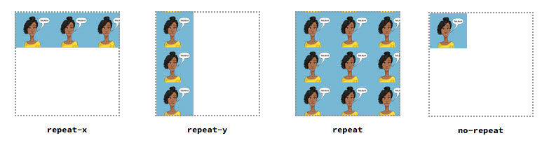

color¶
색상이름은 140 개이상을 지원합니다.
색상값은 HEX, RGB(RGBA), HSL(HSLA)를 사용하여 지정할 수 있습니다.
16 진수 표기법(HEX)¶
#ffff00 처럼 # 기호에 6 자리 16 진수로 표시하는 방법입니다. 이 6 자리는 두자리씩 묶어 #RRGGBB 형식으로 표시합니다.
RR(빨강), GG(녹색), BB(파랑)는 00(색이 하나도 섞이지 않음)에서 ff(색이 가득 섞임) 사이의 16 진수값입니다.
| 십진수 | 0 | 1 | 2 | 3 | 4 | 5 | 6 | 7 | 8 | 9 | 10 | 11 | 12 | 13 | 14 | 15 |
|---|---|---|---|---|---|---|---|---|---|---|---|---|---|---|---|---|
| 16진수 | 0 | 1 | 2 | 3 | 4 | 5 | 6 | 7 | 8 | 9 | a | b | c | d | e | f |
#ffff00처럼 두 자리씩 중복될경우#ff0으로 줄여서 표기할 수도 있습니다.
rgb 와 rgba 표기법¶
0(하나도 섞이지 않음)~255(가득 섞임) 사이의 값을 사용하여 십진수로 표시합니다.
끝에 a 는 불투명도(alpha) 값을 나타내며 0 부터 1 까지의 값중에서 사용하며, 0 은 완전투명 1 은 불투명으로 사이값으로 0.5, 0.6 또는 .6 형식으로 지정할 수도 있습니다.
rgb(red 값, green 값, blue 값) rgba(red 값, green 값, blue 값, alpha 값)
아래 예제는 빨강색으로 불투명도는 0.5 입니다.
p { color: rgba(155, 0, 0, 0.5); }
hsl 과 hsla 표기법¶
hsl 은 색조(hue), 채도(saturation), 명도(lightness) 를 나타냅니다.
hsl(hue 값, saturation 값, lightness 값) hsla(hue 값, saturation 값, lightness 값, alpha 값)
색상(hue)은 0 과 360 도는 빨강색, 120 도는 초록색, 240 도는 파란색이 배치되고 사이사이 나머지 색들이 배치됩니다.
채도(saturation)는 '%'로 표시되고 아무것도 섞이지 않은 상태가 채도가 가장 높은 상태입니다. 채도가 0%이면 회색 톤, 100%이면 순색으로 표시됩니다.
명도(lightness)도 '%'로 표시되고 0%가 가장 어둡고 100%가 가장 밝습니다.

아래 예제는 발강색을 표현하는데 알파값이 0.5 로 절반쯤 투명합니다.
p { color: hsla(360, 100%, 0%, 0.5); }
background¶
웹문서 전체에 배경뿐만이 아니라 텍스트, 목록 등 원하는 부분에도 배경을 지정할 수 있습니다. 배경 색뿐만이 아니라 이미지도 넣을 수 있습니다.
배경색 지정하기¶
배경 색을 지정하려면 background-color 속성을 사용합니다.
.ex { background-color: <색상>; }
background-color 의 값으로 16 진수, rbg 값, 색상이름 등을 사용할 수 있습니다.
background-color 는 상속되지 않습니다.
웹요소에 배경 이미지 넣기¶
배경 이미지를 넣을 때는 background-image 속성을 사용합니다.
.ex { background-image: url(파일경로); }
url 에 파일경로는 파일명까지 포함해야 하며, 상대경로 또는 절대경로 다 사용가능합니다.
파일경로에는 작은따옴표(또는 큰따옴표)를 붙여도되고, 생략해도 됩니다.
배경이미지를 여러 개를 사용할 수 있는데 이때는 첫번째 이미지부터 순서대로 보여집니다.
배경 이미지 반복 방법 지정하기¶
배경 이미지를 반복해서 표시할지를 지정하며 background-repeat 속성을 사용하여 지정합니다.
background-repeat: repeat | repeat-x | repeat-y no-repeat;
속성값은 다음과 같습니다.
| 속성 값 | 설명 |
|---|---|
| repeat | 배경이미지를 가로와 세로로 반복합니다. |
| repeat-x | 배경이미지를 가로로 반복합니다. |
| repeat-y | 배경이미지를 세로로 반복합니다. |
| no-repeat | 배경이미지를 한번만 표시하고 반복하지 않습니다. |

배경 이미지 위치 조절하기¶
배경 이미지의 위치는 background-position 속성을 이용해서 조절합니다.
backgrond-position: <수평위치> <수직위치>;
- 수평위치: left | center | right | <백분율> | <길이 값>
- 수직위치: top | center | bottom | <백분율> | <길이 값>
background-position 속성은 수평위치, 수직위치를 같이 사용하는데 하나만 지정할경우, 그 값은 수평위치값으로 간주하고 수직 위치 값은 50%나 center 로 간주합니다.
키워드 표기법¶
배경 이미지의 위치를 지정할때 가장 많이 사용하는 속성값은 키워드입니다.
수평 수직의 값을 키워드로 지정합니다.
예를들어 background-position: left bottom 이런식으로 사용할 수 있습니다.
백분율(%) 표기법¶
수평 수직의 값을 %로 지정합니다.
예들들어 background-position: 30% 60% 라고 하면 왼쪽 모서리로부터 가로 30%, 세로 60%의 위치에 맞춥니다.
길이(px) 표기법¶
수평 수직의 값을 px 로 지정합니다.
예를들어 background-position: 30px 20px 라고 하면 왼쪽 모서리로부터 30px, 세로로 20px 의 위치에 맞춥니다.

배경 이미지 고정하기¶
스크롤할때 배경이미지를 고정할 수 있습니다. background-attachment 속성을 사용합니다.
| 속성 값 | 설명 |
|---|---|
| scroll | 화면 스크롤과 함께 배경 이미지도 스크롤됩니다. 기본값 |
| fixed | 화면이 스크롤되더라도 배경 이미지는 고정됩니다. |

배경 이미지 속성 하나로 제어하기¶
위에 설명한 배경 이미지 관련 속성을 background 속성 하나로 줄여서 사용할 수 있습니다.
background: url("images/img.jpg") no-repeat fixed right bottom;
| 속성 | 속성 값 |
|---|---|
| background-image | url('images/img.jpg') |
| background-repeat | no-repeat |
| background-attachment | background-attachment |
| background-position | right bottom |
별다른 속성 값을 지정하지 않으면 기본 값으로 지정됩니다.
border¶
테두리는 텍스트 단락뿐만 아니라 그림이나 표, 양식 등 사가 형태를 가지 어떤 요소에나 다양하게 적용할수 있습니다. 테두리에는 테두리 두께, 테두리 스타일, 테두리 색상 등이 있습니다.
border-style 속성 - 테두리 스타일 지정하기¶
테두리 스타일을 지정하는 border-style 속성은 기본값이 none 이기 때문에 테두리 스타일을 지정하지 않으면 테두리 색상이나 두께를 지정하더라도 화면에 표시되지 않습니다.
| 속성 값 | 설명 | 예시 |
|---|---|---|
| none | 테두리가 나타나지 않습니다. 기본값 |
none
|
| hidden | 테두리가 나타나지 않습니다. border-collapse:collapse일 경우 다른 테두리도 표시되지 않습니다. | |
| dashed | 테두리를 짧은 선(직선으로 된 점선)으로 표시합니다. |
dashed
|
| dotted | 테두리를 점선으로 표시합니다. |
dotted
|
| double | 테두리를 이중선(겹션)으로 표시합니다. 두 선 사이의 간격은 border-width 값으로 지정합니다. |
double
|
| groove | 테두리를 창에 조작한 것처럼 표시합니다. 홈이 파인 듯 입체적으로 보입니다. |
groove
|
| inset | border-collapse:separate일 경우 전체 박스 테두리가 창에 박혀 있는 것처럼 표시되고, border-collapse:collapse일 경우 groove와 똑같이 표시됩니다. |
inset
|
| outset | border-collapse:separate일 경우 전체 박스 테두리가 창에서 튀어나온 것처럼 표시되고, border-collapse:collapse일 경우 ridge와 똑같이 표시됩니다. |
outset
|
| ridge | 테두리를 창에서 튀어나온 것처럼 표시합니다. |
ridge
|
| solid | 테두리를 실선으로 표시합니다. |
solid
|
border-collapse 속성은 표에서 셀과 셀 사이의 테두리가 두 번 그려지는 것을 겹쳐 하나로 표시할 것인지(border-collapse:collapse), 두 개로 표시할 것인지(border-collapse:separate)를 지정하는 것입니다.
border-width 속성 - 테두리 두께 지정하기¶
테두리 스타일과 마찬가지로 테두리 두께가 있어야만 화면에 표시됩니다.
border-top-width: <크기> | thin | medium | thick border-right-width: <크기> | thin | medium | thick border-bottom-width: <크기> | thin | medium | thick border-left-width: <크기> | thin | medium | thick border-width: <크기> | thin | medium | thick
아래 예제에서 차이를 볼 수 있습니다.
| 속성 | 속성 값 | 예시 |
|---|---|---|
| border-top-width | 5px |
border-top-width:5px
|
| border-top-width | thin |
border-top-width:thin
|
| border-top-width | medium |
border-top-width:medium
|
| border-top-width | thick |
border-top-width:thick
|
<table> <tr> <th>속성</th> <th>속성 값</th> <th>예시</th> </tr> <tr> <td>border-top-width</td> <td>5px</td> <td> <div style="border-style:solid; border-top-width:5px">border-top-width:5px</div> </td> </tr> <tr> <td>border-top-width</td> <td>thin</td> <td> <div style="border-style:solid; border-top-width:thin">border-top-width:thin</div> </td> </tr> <tr> <td>border-top-width</td> <td>medium</td> <td> <div style="border-style:solid; border-top-width:medium">border-top-width:medium</div> </td> </tr> <tr> <td>border-top-width</td> <td>thick</td> <td> <div style="border-style:solid; border-top-width:thick">border-top-width:thick</div> </td> </tr> </table>
border-color 속성 - 테두리 색상 지정하기¶
border-width 처럼 한군데 또는 둘, 셋 모두 적용 가능합니다. 색상을 지정하지 않으면 기본값인 검정색이 표시됩니다.
border-top-color: <색상> border-right-color: <색상> border-bottom-color: <색상> border-left-color: <색상> border-color: <색상>
width 또는 style 을 지정하지 않으면 보이지 않기때문에 border-style:solid 를 지정하고 border-top-color:red 를 공통으로 지정했습니다.
| 속성 | 속성 값 | 예시 |
|---|---|---|
| border-top-color | red |
border-top-color:red
|
| border-right-color | red |
border-right-color:red
|
| border-bottom-color | red |
border-bottom-color:red
|
| border-left-color | red |
border-left-color:red
|
| border-color | red |
border-color:red
|
<table> <tr> <th>속성</th> <th>속성 값</th> <th>예시</th> </tr> <tr> <td>border-top-color</td> <td>red</td> <td> <div style="border-style:solid; border-top-color:red">border-top-color:red</div> </td> </tr> <tr> <td>border-right-color</td> <td>red</td> <td> <div style="border-style:solid; border-right-color:red">border-right-color:red</div> </td> </tr> <tr> <td>border-bottom-color</td> <td>red</td> <td> <div style="border-style:solid; border-bottom-color:red">border-bottom-color:red</div> </td> </tr> <tr> <td>border-left-color</td> <td>red</td> <td> <div style="border-style:solid; border-left-color:red">border-left-color:red</div> </td> </tr> <tr> <td>border-color</td> <td>red</td> <td> <div style="border-style:solid; border-color:red">border-color:red</div> </td> </tr> </table>
border 속성 - 테두리 스타일 묶어 지정하기¶
테두리 스타일과 두께, 색상을 묶어서 지정할 수 있습니다.
네 방향의 테두리 스타일을 다르게 지정하고 싶다면 border-top 이나 border-right 처럼 속성 이름에 방향을 함께 써서 따로 지정하고 네 방향이 같으면 border 속성을 사용합니다.
이때 두께와 색상, 스타일 순서는 상관없습니다.
border-top: <두께> | <색상> | <스타일> border-right: <두께> | <색상> | <스타일> border-bottom: <두께> | <색상> | <스타일> border-left: <두께> | <색상> | <스타일> border: <두께> | <색상> | <스타일>
아래 예제는 두께 색상 스타일을 예제로 만들었습니다.
.ex { border: 5px red solid; }
미리보기